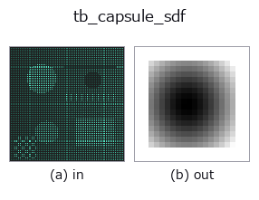

typed op• 資料種類:points → volume
• 呼叫:fullseye.apply(img, "tb_capsule_sdf", a=0.5, b=0.5)(2-D 的模型是一張圖 + 兩個純量旋鈕 a,b∈[0,1])

*圖為在 128×128 合成輸入上實際執行的輸出。左為輸入，右為輸出。點雲以俯視散點顯示(亮度 = z)，一維序列為折線，體資料為沿 z 的最大值投影，影片為中間影格，複數影像為振幅；無法成像的回傳值直接顯示數值。*
*旋鈕 a 不改變輸出(實測: 0.1 / 0.5 / 0.9 相同)。*
*旋鈕 b 不改變輸出(實測: 0.1 / 0.5 / 0.9 相同)。*
階段(前置運算子 → 本運算子，由左至右):
▸ tb_capsule_sdf: stages (docs site)
換別的影像(合成場景 / 照片 / 硬幣。上排為輸入，下排為對應輸出。旋鈕取預設):
▸ tb_capsule_sdf: other inputs (docs site)
動態(GIF: 依序顯示影格 / 視點 / 切片。靜態圖是完整版，GIF 為輔助):
> 該運算子的說明尚無譯文,以下照原文給出。
線分 `a–b を半径 radius` で太らせたカプセルの厳密な符号付き距離場。
`sdf(p) = ‖p - (a + clamp(((p-a)·(b-a))/‖b-a‖², 0, 1)·(b-a))‖ - radius`。
線分への最短距離そのものなので全空間で勾配ノルム 1(円柱と違い端が丸いぶん、
角が無く厳密)。リブ・配管・骨・ワイヤ・工具の掃引体積の近似に向く。
引数と検証(`ValueError`):
• `grid: 最終軸が 3 の float 配列 (..., 3)`。
• `a / b: 芯線の端点(要素数 3)。a == b なら球(sphere_sdf` と一致)。
• `radius`: 太さ(負は拒否)。
返り値: `grid.shape[:-1]` の float64。
使いどころ: 工具の到達性を「工具の掃引体積が部品と交わらないか」で見るとき、工具を
カプセルで置いて `sdf_intersect` の最小値が正かを見る。骨梁・血管・繊維の合成にも。
2-D 進化レジストリへ橋渡しした 3d の op `capsule_sdf。実装は同じで、呼び出し規約だけ op(v, a, b) に合わせてある。この op に調整点は無く、a も b` も使われない。
• 範例資料目錄(下載 URL / 授權) —— 2-D 用 skimage.data(BSD/公有領域)加合成圖,3-D 給出真實資料源(Stanford/PDS 等)的下載 URL。
• 運算子來歷與參考文獻 —— 該運算子族所依據的研究/方法出處。
下面的程式已確認可以執行(與圖相同的輸入)。在 Studio 說明中，此區塊會變成按鈕，可當場載入並執行。
img_to_points 0.50 0.50 tb_capsule_sdf 0.50 0.50
▸ Load this pipeline · Load & run
下面的範例呼叫的是底層帳本運算子 capsule_sdf。此橋接運算子只是把同一實作適配為 fn(v, a, b) 慣例，行為完全相同(只是呼叫形式不同)。
• procedural_hand — py -3.11 examples_3d/procedural_hand.py
• sdf_csg — py -3.11 examples_3d/sdf_csg.py
volume 作為輸入)identity · vol_gaussian · vol_median · vol_erode · vol_dilate · vol_threshold · vol_reg_dilate · vol_reg_erode
typed)tb_points_to_voxel · tb_estimate_point_normals · tb_iss_keypoints · tb_angle_3points · tb_project_points · tb_render_point_depth · tb_statistical_outlier_removal · tb_radius_outlier_removal
*Provenance: ops.py — 2D 運算子登記表。本條目由 tools/opdocs.py md 自動產生(請勿手動編輯)。*
© 2026 Kazufumi Furuse — Fullseye operator documentation. Licensed under Apache-2.0.
{kind=link}
{kind=link}